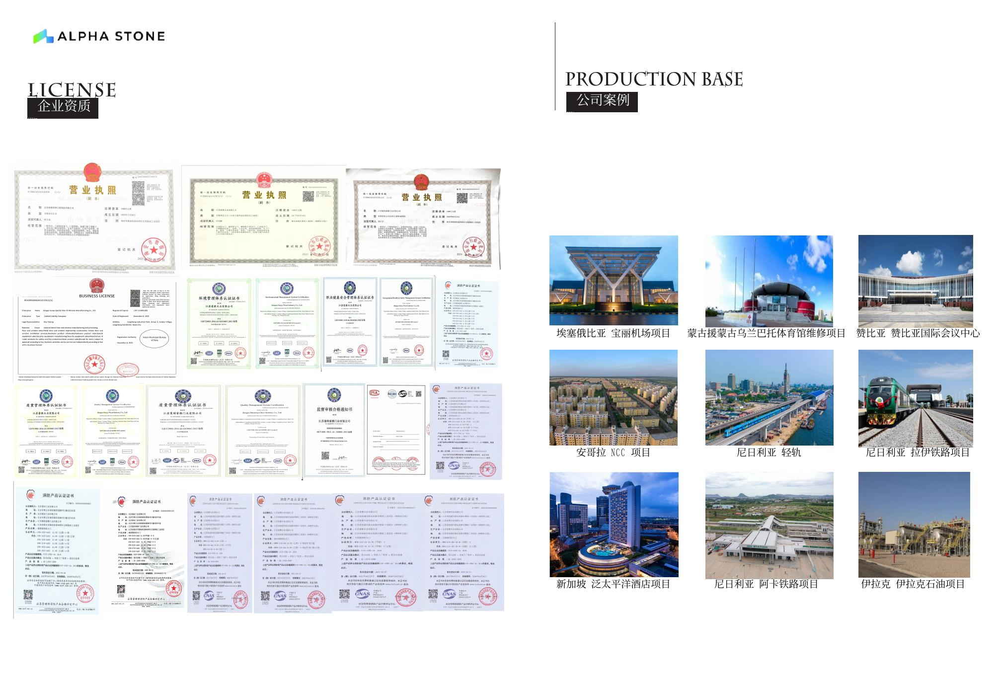
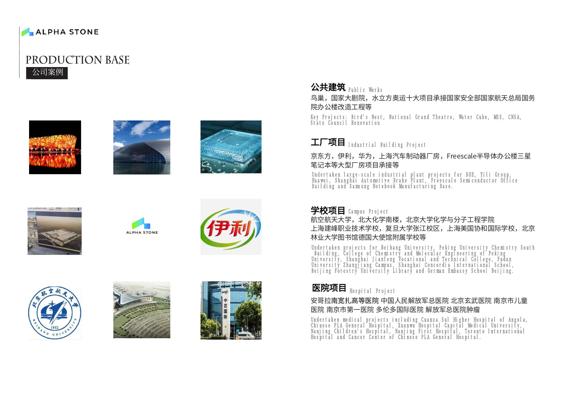

PROJECTS & REFERENCES
Hospital experience
ALPHA STONE.
References are presented with a clear distinction between documented information and details still requiring confirmation.
ALGERIA · HEALTHCARE
Tindouf Hospital
PROJECT IN PROGRESS
The Tindouf hospital project is presented as an ALPHA STONE healthcare reference in Algeria. Detailed door models, quantities, project participants and photographs will only be published when the corresponding supporting documents and publication authorisations are available.
MANUFACTURER REFERENCES
Selected international healthcare references.
The projects below are listed in the ALPHA STONE manufacturer catalogue. The exact supply scope should be confirmed from project-specific supporting documentation before making detailed performance or quantity claims.


PUBLICATION METHOD
Documented references, not unsupported claims.
Project evidence
Project identification and actual supply scope are checked before detailed publication.
Products
Models and performance are published only when supported by corresponding technical documents.
Photography
Project and product images are added only when authorised for publication.
YOUR PROJECT
Planning a healthcare project?
OM TRADING can review specifications, BOQ and drawings to support ALPHA STONE door selection.